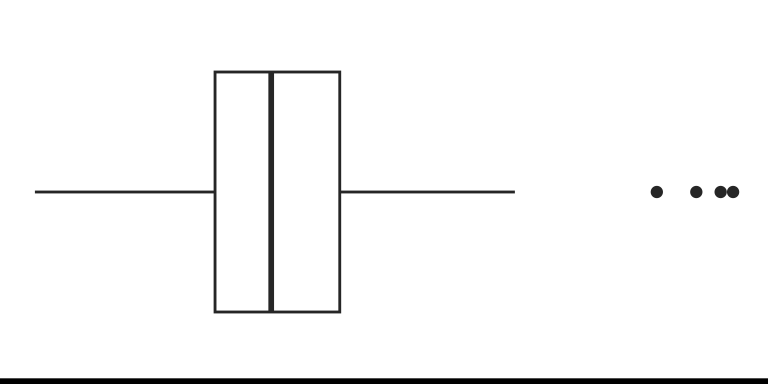
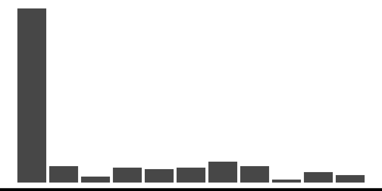
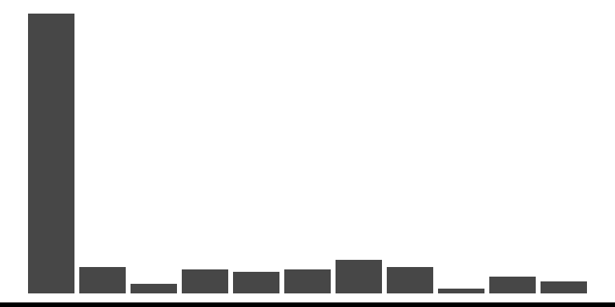
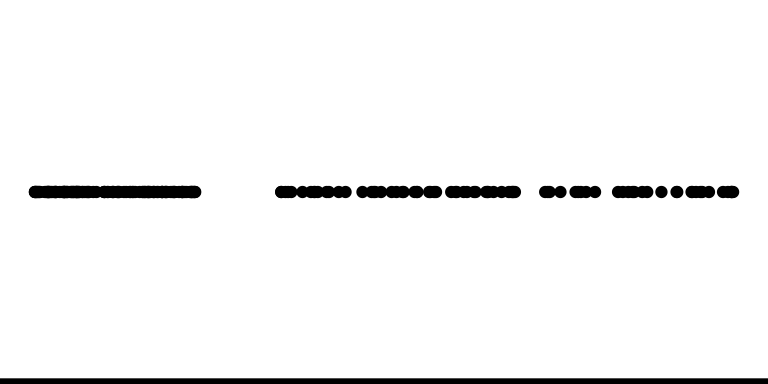
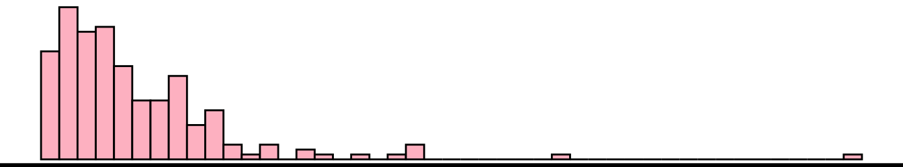
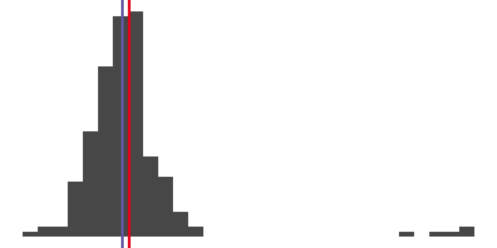
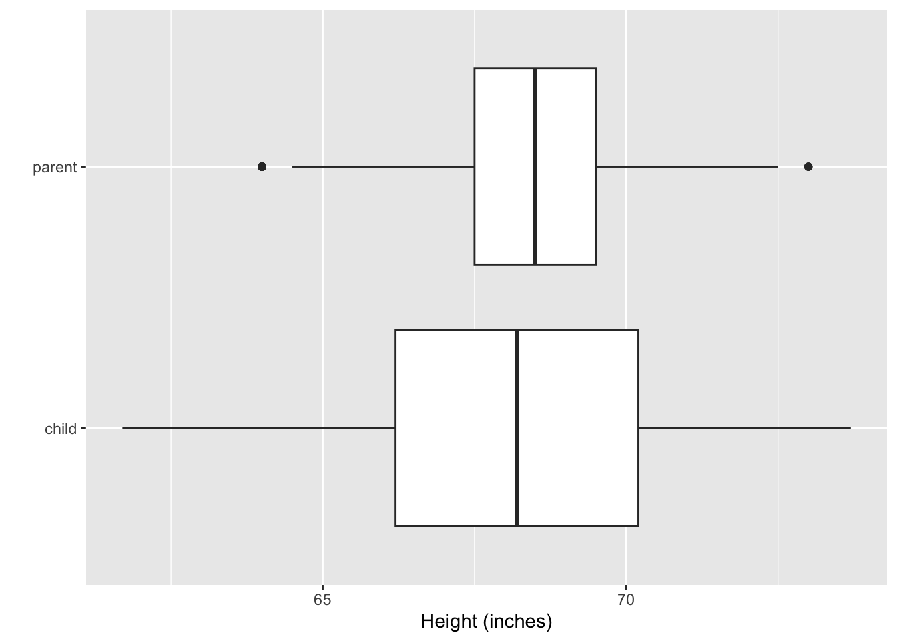

Chapter 4 Working with a single variable
making transformations, detecting outliers, using robust statistics
4.1 Possible features of continuous variables

## Warning: Ignoring unknown parameters: binwidth
 

## `stat_bindot()` using `bins = 30`. Pick better value with `binwidth`.
| Feature | Example | Description |
|---|---|---|
| Asymmetry |  |
The distribution is not symmetrical. |
| Outliers |  |
Some observations are that are far from the rest. |
| Multimodality | There are more than one “peak” in the observations. | |
| Gaps |  | Some continuous interval that are contained within the range but no observations exists. |
| Heaping |  |
Some values occur unexpectedly often. |
| Discretized |  |
Only certain values are found, e.g. due to rounding. |
| Implausible |  |
Values outside of plausible or likely range. |
4.2 Numerical features of a single contiuous variables
ggplot(some_df, aes(x1)) +
geom_histogram(binwidth = 0.2, fill = "pink", color = "black") +
theme_void() +
theme(axis.line.x = element_line(color = "black", size = 2))
- A measure of central tendency, e.g. mean, median and mode.
- A measure of dispersion (also called variability or spread), e.g. variance, standard deviation and interquartile range.
- There are other measures, e.g. skewness and kurtosis that measures “tailedness,” but these are not as common as the measures of first two.
- The mean is also the first moment and variance, skewness and kurtosis are second, third, and fourth central moments.
- Significance tests or hypothesis tests: When testing for \(H_0: \mu = \mu_0\) vs. \(H_1: \mu \neq \mu_0\) (often \(\mu_0 = 0\)), the \(t\)-test is commonly used if the underlying data are believed to be normally distributed.
4.3 Outliers
Outliers are observations that are significantly different from the majority. ]
- Outliers can occur by chance in almost all distributions, but could be indicative of a measurement error, a different population, or an issue with the sampling process.
- Outlying values of independent variables are referred to as high-leverage points, although this distinction is not particularly important when analysing a single continuous variable.
4.4 Closer look at the boxplot
fn <- quantile(mtcars$wt, c(0, 0.25, 0.5, 0.75, 1), type = 7)
iqr <- fn[4] - fn[2]
ggplot(mtcars, aes(wt, "")) +
geom_boxplot(size = 1.4, width = 0.2, outlier.color = "#006DAE",
outlier.size = 3, outlier.fill = "#006DAE") +
geom_dotplot(binwidth = 0.1, fill = "gray") +
annotate("line", x = fn[c(2,4)], y = 1.3, size = 1.3, color = "#C8008F") +
annotate("segment", x = fn[c(2, 4, 3)], xend = fn[c(2,4, 3)],
y = c(1.25, 1.25, 0.75), yend = c(1.35, 1.35, 0.9), size = 1.3, color = "#C8008F") +
annotate("text", x = c(mean(fn[c(2, 4)]), fn[3]), y = c(1.4, 0.7), label = c("IQR", "median"), size = 10, color = "#C8008F") +
# some reason vline didn't work
annotate("segment", x = c(fn[4] + 1.5 * iqr, fn[2] - 1.5 * iqr), xend = c(fn[4] + 1.5 * iqr, fn[2] - 1.5 * iqr), y = -Inf, yend = Inf, linetype = "dashed") +
theme_void()
- Observations that are outside the range of lower to upper thresholds are referred at times as .monash-blueoutliers.
- Plotting boxplots for data from a skewed distribution will almost always show these “outliers” but these are not necessary outliers.
- Some definitions of outliers assume a symmetrical population distribution (e.g. in boxplots or observations a certain standard deviations away from the mean) and these definitions are ill-suited for asymmetrical distributions.
4.5 Robust statistics: measure of central tendency
df <- tibble(x = rnorm(200) + c(rep(0, each = 195), rep(10, 5)))
ggplot(df, aes(x)) +
geom_histogram() +
geom_vline(xintercept = mean(df$x),
color = "#EE0220", size = 1.3) +
geom_vline(xintercept = median(df$x),
color = "#746FB2", size = 1.3) +
theme_void()## `stat_bin()` using `bins = 30`. Pick better value with `binwidth`.
- Mean is a non-robust measure of location.
- Some robust measures of locations are:
- Median is the 50% quantile of the observations
- Trimmed mean is the sample mean after discarding observations at the tails.
- Winsorized mean is the sample mean after replacing observations at the tails with the minimum or maximum of the observations that remain.
4.6 Robust statistics: measure of dispersion
- Standard deviation or its square, **variance*, is a popular choice of measure of dispersion but is not robust to outliers.
- Standard deviation for sample \(x_1, ..., x_n\) is calculated as \[\sqrt{\sum_{i=1}^n \frac{(x_i - \bar{x})^2}{n - 1}}\]
- Interquartile range is the difference between 1st and 3rd quartile and is more robust measure of spread than above.
- Median absolute deviance (MAD) is also more robust and defined as \[\text{median}(|x_i - \bar{x}|).\]
4.7 Transformations
- Transformations to data are used as an attempt to stabilize the variance or make the data symmetrical.
- Log and square root transformations are popular.
- A range of \(\lambda\) values for (one-parameter) Box-Cox transformation is sometimes used to test for optimal transformation: \[y(\lambda) = \begin{cases}\dfrac{(y^\lambda - 1)}{\lambda}\\ \log(y)\end{cases}\]
Children and midparents heights
ggplot(df2, aes(height)) +
geom_histogram(binwidth = 1) +
facet_wrap(~ person, scale = "free") +
labs(x = "Height (inches)", y = "Frequency")
ggplot(df2, aes(height)) +
geom_histogram(binwidth = 1) +
facet_grid(. ~ person) +
labs(x = "Height (inches)", y = "Frequency")
- Midparent’s height is an average of the father’s height and 1.08 times the mother’s height.
- The data contains 205 parents and 928 children.
galton %>%
arrange(parent, child) %>%
as_tibble() %>%
print(n = 3)## # A tibble: 928 x 2
## child parent
## <dbl> <dbl>
## 1 61.7 64
## 2 63.2 64
## 3 63.2 64
## # … with 925 more rows- The data included families of 1 to 15 children, so in the extreme case, one midparent data point is repeated 15 times in the data.
- The frequency of midparents heights therefore are over-represented with parents with large family size.
ggplot(df2, aes(height)) +
geom_histogram(binwidth = 1, aes(y = stat(density))) +
facet_wrap(~ person) +
labs(x = "Height (inches)", y = "Density")
ggplot(df2, aes(height)) +
geom_histogram(binwidth = 0.1, aes(y = stat(density))) +
facet_wrap(~ person) +
labs(x = "Height (inches)", y = "Density")
- Changing the bin width of histogram from 1 to 0.1, we can see the data have been rounded and hence some precision is lost in the data.
- The data confirms this with most children’s height recorded with “.2” at the end and most midparents heights recorded with “.5” at the end.
df2sum <- df2 %>%
group_by(person) %>%
summarise(med = median(height))
ggplot(df2, aes(height)) +
geom_histogram(binwidth = 1) +
facet_grid(person ~ ., as.table = FALSE) +
geom_vline(data = df2sum,
aes(xintercept = med),
color = "red", size = 2) +
labs(x = "Height (inches)", y = "Frequency")
ggplot(df2, aes(height, person)) +
geom_boxplot() +
labs(x = "Height (inches)", y = "")
- Aligning the histogram vertically makes it easier to compare the heights of children and midparents.
- The side-by-side boxplots makes it easy to see the variability of the heights of the midparents are smaller than the children.
- The smaller variability is expected because the midparents heights are average of two values.
- We can also see that the median height is larger for the midparents than children.
- You may think that the heights of children should be bimodal, one peak for male and the other peak for female. But that is not necessary the case as we’ll see next.
Self-reported heights
data("heights", package = "dslabs")ggplot(heights, aes(height)) +
geom_density(aes(fill = sex), size = 2) +
scale_fill_discrete_qualitative() +
labs(x = "Height (inches)", y = "Density") +
theme(legend.position = c(0.2, 0.8)) 
ggplot(heights, aes(height)) +
geom_density(fill = "#027EB6", size = 2) +
labs(x = "Height (inches)", y = "Density")- You can see that drawing separate density plots for each sexes shows that the women are on average shorter than men.
- The bimodality is however not visible when the data are combined.
Men’s heights
ggplot(df4, aes(height)) +
geom_histogram(binwidth = 1, aes(y = stat(density))) +
facet_grid(status ~ .) +
geom_density(color = "red", size = 2) +
labs(x = "Height (inches)", y = "Density")ggplot(df4, aes(sample = height)) +
geom_qq_line(color = "red", size = 2) +
geom_qq() +
facet_grid(. ~ status) +
labs(x = "Theoretical quantiles", y = "Sample quantiles")
ggplot(df4, aes(height, status)) +
geom_boxplot() +
labs(x = "Height (inches)", y = "")- The height distribution of the son appears more normal than of the father looking at the density plot.
- Looking at the Q-Q plots, this however looks the other way around.
- The heights are recorded to five decimal places (e.g.
65.04851). - It’s unlikely that the heights were measured to such high precision and rather that someone must have “jittered” the data (i.e. added some small random perturbation to the observation).
Boston housing data
ggplot(df5, aes(MEDV)) +
geom_histogram(binwidth = 1, color = "black", fill = "#008A25") +
labs(x = "Median housing value (US$1000)", y = "Frequency")
- Thre is a large frequency in the final bin.
- There is a decline in observations in the $40-49K range as well as dip in observations around $26K and $34K.
- The histogram is using a bin width of 1 unit and is left-open (or right-closed): (4.5, 5.5], (5.5, 6.5] … (49.5, 50.5].
- Occasionally, whether it is left- or right-open can make a difference.
ggplot(df5, aes(MEDV, y = "")) +
geom_boxplot(fill = "#008A25") +
labs(x = "Median housing value (US$1000)", y = "") +
theme(axis.line.y = element_blank())
ggplot(df5, aes(MEDV, y = "")) +
geom_jitter() +
labs(x = "Median housing value (US$1000)", y = "") +
theme(axis.line.y = element_blank())ggplot(df5, aes(MEDV)) +
geom_density() +
geom_rug() +
labs(x = "Median housing value (US$1000)", y = "") +
theme(axis.line.y = element_blank())
- Density plots depend on the bandwidth chosen and more than often do not estimate well at boundary cases.
- There are various way to present features of the data using a plot and what works for one person, may not be as straightforward for another.
- Be prepared to do multiple plots.
ggplot(df5, aes(PTRATIO)) +
geom_histogram(fill = "#9651A0", color = "black", binwidth = 0.2) +
labs(x = "Pupil-teacher ratio by town", y = "",
title = "Bin width = 0.2, Left-open") 
ggplot(df5, aes(PTRATIO)) +
geom_histogram(fill = "#9651A0", color = "black", binwidth = 0.5) +
labs(x = "Pupil-teacher ratio by town", y = "",
title = "Bin width = 0.5, Left-open") 
ggplot(df5, aes(PTRATIO)) +
geom_histogram(fill = "#9651A0", color = "black", bin = 30) +
labs(x = "Pupil-teacher ratio by town", y = "",
title = "Bin number = 30, Left-open") ## Warning: Ignoring unknown parameters: bin## `stat_bin()` using `bins = 30`. Pick better value with `binwidth`.
ggplot(df5, aes(PTRATIO)) +
geom_histogram(fill = "#9651A0", color = "black", binwidth = 0.2, closed = "left") +
labs(x = "Pupil-teacher ratio by town", y = "",
title = "Bin width = 0.2, Right-open") 
ggplot(df5, aes(PTRATIO)) +
geom_histogram(fill = "#9651A0", color = "black", binwidth = 0.5, closed = "left") +
labs(x = "Pupil-teacher ratio by town", y = "",
title = "Bin width = 0.5, Right-open") 
ggplot(df5, aes(PTRATIO)) +
geom_histogram(fill = "#9651A0", color = "black",
bin = 30, closed = "left") +
labs(x = "Pupil-teacher ratio by town", y = "",
title = "Bin number = 30, Right-open") ## Warning: Ignoring unknown parameters: bin## `stat_bin()` using `bins = 30`. Pick better value with `binwidth`.
ggplot(df5long, aes(value)) +
geom_histogram() +
facet_wrap( ~var, scale = "free") +
labs(x = "", y = "") +
theme(axis.text = element_text(size = 12))## `stat_bin()` using `bins = 30`. Pick better value with `binwidth`.
- CRIM: per capita crime rate by town
- INDUS: proportion of non-retail business acres per town
- NOX: nitrogen oxides concentration (parts per 10 million)
- RM: average number of room per dwelling
- AGE: proportion of owner-occupied units built prior to 1940
- DIS: weighted mean of distances to 5 Boston employment centres
- RAD: index of accessibility to radial highways
- TAX: full-value property tax rate per $10K
- PTRATIO: pupil-teacher ratio by town
- LSTAT: lower status of the population (%)
- MEDV: median value of owner-occupied homes in $1000s
Movie length
ggplot(movies, aes(length)) +
geom_histogram() +
labs(x = "Length of movie (minutes)", y = "Frequency")## `stat_bin()` using `bins = 30`. Pick better value with `binwidth`.
ggplot(movies, aes(length, y = "")) +
geom_boxplot() +
labs(x = "Length of movie (minutes)", y = "") +
theme(axis.line.y = element_blank())
- Upon further exploration, you can find the two movies that are well over 16 hours long are:
movies %>%
filter(length > 1000) %>%
pull(title) %>%
cat(sep = "\n")## Cure for Insomnia, The
## Four Stars
## Longest Most Meaningless Movie in the World, The- We can restrict our attention to films under 3 hours:
movies %>%
filter(length < 180) %>%
ggplot(aes(length)) +
geom_histogram(binwidth = 1, fill = "#795549", color = "black") +
labs(x = "Length of movie (minutes)", y = "Frequency") 
4.8 Categorical variables
There are two types of categorical variables:
- Nominal where there is no intrinsic ordering to the categories. E.g. blue, grey, black, white.
- Ordinal where there is a clear order to the categories. E.g. Strongly disagree, disagree, neutral, agree, strongly agree.
4.8.1 Categorical factors un R
- In R, categorical variables may be encoded as factors.
data <- c(2, 2, 1, 1, 3, 3, 3, 1)
factor(data)## [1] 2 2 1 1 3 3 3 1
## Levels: 1 2 3- You can easily change the labels of the variables:
factor(data, labels = c("I", "II", "III"))## [1] II II I I III III III I
## Levels: I II III- Order of the factors are determined by the input:
# numerical input are ordered in increasing order #<<
factor(c(1, 3, 10))## [1] 1 3 10
## Levels: 1 3 10# character input are ordered alphabetically #<<
factor(c("1", "3", "10"))## [1] 1 3 10
## Levels: 1 10 3# you can specify order of levels explicitly #<<
factor(c("1", "3", "10"), levels = c("1", "3", "10"))## [1] 1 3 10
## Levels: 1 3 104.8.2 Numerical factors in R
x <- factor(c(10, 20, 30, 10, 20))
mean(x)## Warning in mean.default(x): argument is not numeric or logical: returning NA## [1] NA as.numeric function returns the internal integer values of the factor
mean(as.numeric(x))## [1] 1.8You probably want to use:
mean(as.numeric(levels(x)[x]))## [1] 18mean(as.numeric(as.character(x)))## [1] 184.8.3 Example: German Bundestag Election 2009
df1 %>%
ggplot(aes(voters, state)) +
geom_col() +
labs(x = "Voters (millions)", y = "") 
df1 %>%
mutate(state = fct_reorder(state, voters)) %>%
ggplot(aes(voters, state)) +
geom_col() +
labs(x = "Voters (millions)", y = "") 
df1 %>%
mutate(state = fct_reorder(state, voters)) %>%
ggplot(aes(voters, state)) +
geom_col() +
labs(x = "Voters (millions)", y = "") +
facet_grid(loc ~ ., scale = "free_y") 
4.9 Order nominal variables meaningfully
Coding tip: use below functions to easily change the order of factor levels
stats::reorder(factor, value, mean)
forcats::fct_reorder(factor, value, median)
forcats::fct_reorder2(factor, value1, value2, func)4.10 Example: Aspirin use after heart attack
df8 %>%
mutate(study = fct_reorder(study, desc(total))) %>%
ggplot(aes(study, total)) +
geom_col() +
labs(x = "", y = "Frequency") +
guides(x = guide_axis(n.dodge = 2))
df8 %>%
mutate(study = ifelse(total < 2000, "Other", study),
study = fct_reorder(study, desc(total))) %>%
ggplot(aes(study, total)) +
geom_col() +
labs(x = "", y = "Frequency") 
- Meta-analysis is a statistical analysis that combines the results of multiple scientific studies.
- This data studies the use of aspirin for death prevention after myocardial infarction, or in plain terms, a heart attack.
- The ISIS-2 study has more patients than all other studies combined.
- You could consider lumping the categories with low frequencies together.
4.11 Consider combining factor levels with low frequencies
Coding tip: the following family of functions help to easily lump factor levels together:
forcats::fct_lump()
forcats::fct_lump_lowfreq()
forcats::fct_lump_min()
forcats::fct_lump_n()
forcats::fct_lump_prop()
# if conditioned on another variable
ifelse(cond, "Other", factor)
dplyr::case_when(cond1 ~ "level1",
cond2 ~ "level2",
TRUE ~ "Other")4.12 Anorexia
ggplot(anorexia, aes(Treat)) +
geom_bar() +
labs(x = "", y = "Frequency") 
ggplot(anorexia, aes(Treat)) +
stat_count(geom = "point", size = 4) +
stat_count(geom = "line", group = 1) +
labs(y = "Frequency", x = "")- This can be appropriate depending on what you want to communicate.
- A barplot occupies more area compared to a point and the area does a better job of communicating size.
- A line is suggestive of a trend.
geom_bar or geom_col?
df <- data.frame(var = c("F", "F", "M", "M", "F"))
dftab <- as.data.frame(table(df$var))
df## var
## 1 F
## 2 F
## 3 M
## 4 M
## 5 Fdftab## Var1 Freq
## 1 F 3
## 2 M 24.13 Titanic
df9 %>%
group_by(Class) %>%
summarise(total = sum(n)) %>%
ggplot(aes(Class, total)) +
geom_col(fill = "#ee64a4") +
labs(x = "", y = "Frequency") 
df9 %>%
group_by(Sex) %>%
summarise(total = sum(n)) %>%
ggplot(aes(Sex, total)) +
geom_col(fill = "#746FB2") +
labs(x = "", y = "Frequency") 
df9 %>%
group_by(Age) %>%
summarise(total = sum(n)) %>%
ggplot(aes(Age, total)) +
geom_col(fill = "#C8008F") +
labs(x = "", y = "Frequency") 
df9 %>%
group_by(Survived) %>%
summarise(total = sum(n)) %>%
ggplot(aes(Survived, total)) +
geom_col(fill = "#795549") +
labs(x = "Survived", y = "Frequency")